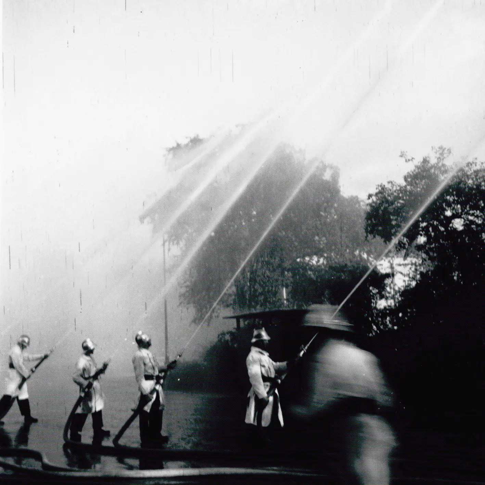
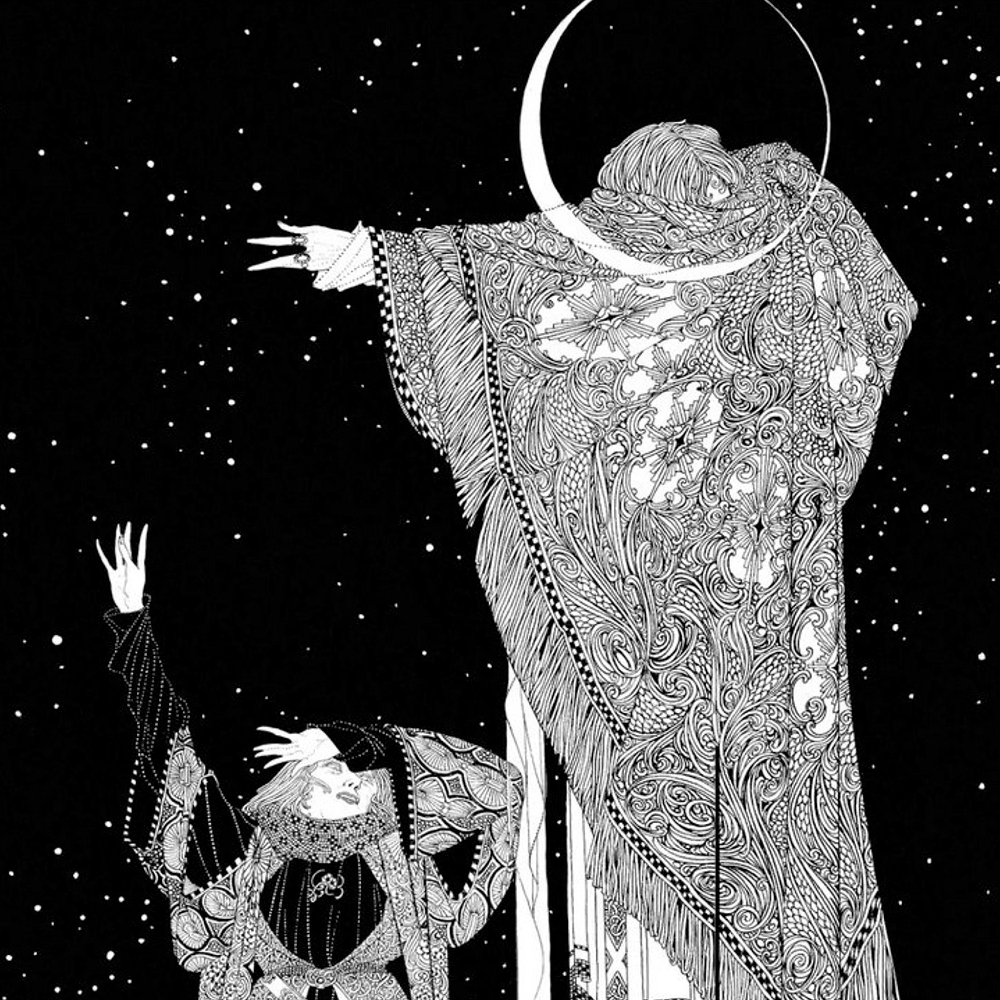
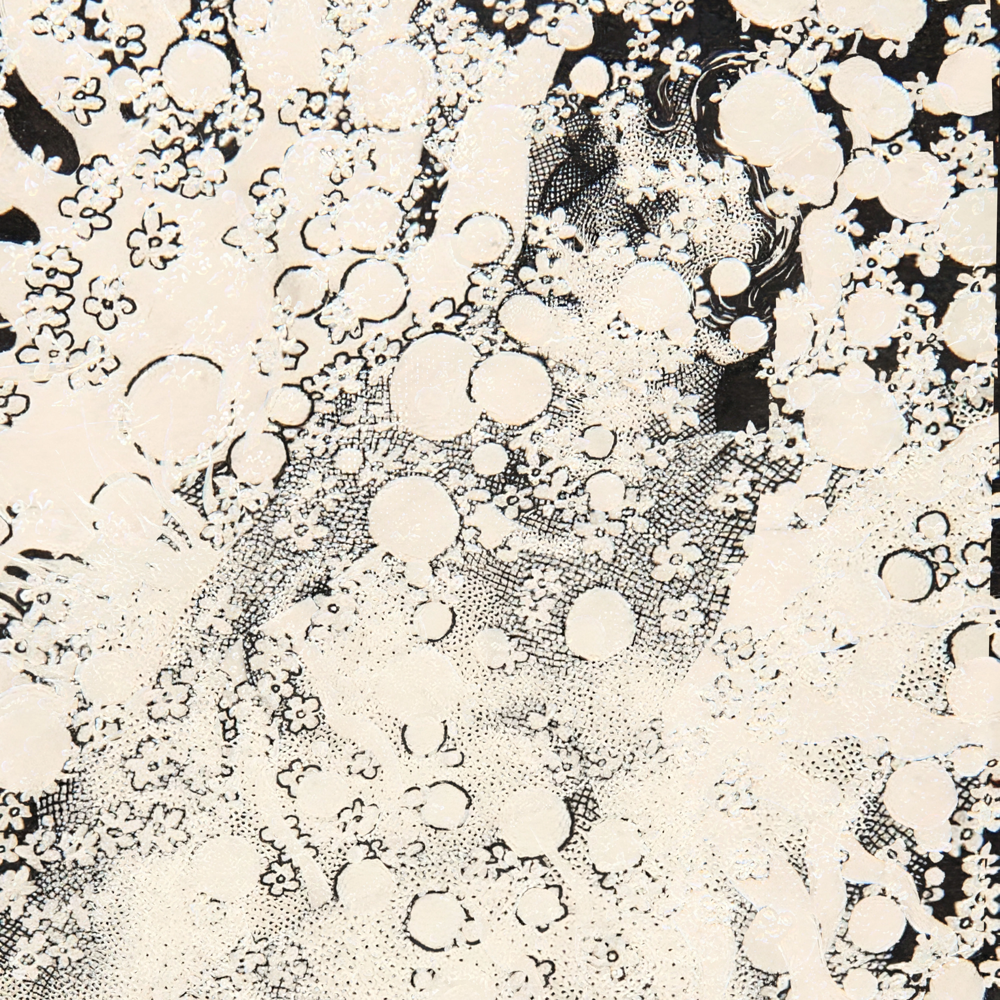

3月8日
15m/s
snöns hastighet
snö bryter igenom taket och blåser in
jag ropar min beställning på egen hand
uppåt genom takhålet mot himlen
butikens blandning, mackrill, lax, musslor, rom
0m/s
ljudet hade ingen hastighet just då
når aldrig fram
sitter fast i väntan
det här taket får aldrig lagas igen
de här orden kommer röra på sig igen
kanske
3月7日
vi försökte lära oss att spela trumpet på grässtrån
fast det var inte grässtrån
det var de ouppblåsta ballongerna från din yngsta brors kalas
som du råkade ha med dig i bakfickan, ut på havet
där vi står stilla, gungar lite, med din pappas båt
du fick bra ton i din ballong
jag lyckas inte alls
har aldrig lyckats
fattar inte hur det funkar, att lyckas
jag försöker klippa av den stora delen av min ballong
så att bara cylinder aktiga biten finns kvar
det lyckades jag med förvånansvärt lätt,
väl för att ha klippt med nybitna naglar
trodde att ett hål i andra änden, och en flöjtliknande form,
skulle ge en fin ton
men luften forsar bara rakt igenom.
3月6日
tid tilläts stå still för oss under en viss tid
och mitt liv, så som jag förstod det förut,
upphörde helt att kännas nödvändigt
sade den europeiske musikstudenten,
utan minsta tveksamhet, dock smått bekymrad
bekymrad över att bara följa i hundratals år gamla fotspår
trampade av forna orientalister
men han menar det från hjärtats djup
det betydde allt att höra
personligen
3月4日
din dörr stod precis på glänt
jag hör dig nynna inifrån
och dörrens gnissel när den rubbas lite lite
av vinden som blåser in genom det öppna fönstret
dörrens gnissel ackompanjerar nynnandet
någon sorts pizzicato vid lättare vind
vid starkare någon sorts overpressure
jag tittar in genom glipan över gånggärnen
eftersom nyckelhålet kändes för uppenbart
du satt rygg mot rygg med din spegelbld
du grät, men det hördes inte alls i rösten
den tunga taklampan i glas dinglar lätt
fram och tillbaka i vinden
om den skulle falla så faller den nog rakt på dig
eller kanske lite bredvid
den slår i klädhängaren en gång
ger en klingande ton
en gång till
du slutar nynna
vinden slutar vina
jag hör mig själv svälja
stången som taklampan sitter fast i snurrar ihop sig själv
som om den vore en garntråd
strömavbrott
3月１日
idolgrupp sjunger och dansar
morton feldman projection 1 för cello
medelåldersmän betalar för en chans
skaka hand efteråt
kom ensam
till uppväxtens fält
siktar mitt skott
kråka på taket
fågel utvisad från himlen
kan ha varit mor
barfota
bedjandes
２月２6日
en liten herre skruvade in gitarrljud som ett perfekt magkurr
med magkurret väl inställt fick han lov att vränga vår verklighet,
om än så subtilt, då kurret flyttade sig ut ur magen
förklarade kurrets djupa innebörd för oss
gibson hoppar över staketet och försöker rymma
２月２５日
vi föll otroligt tungt
regn i blodtåliga byxor
midsommardans i rättvik
regn i otåliga ögon
tappade tag om åtaganden
grodor tilllikkända oskulder
å tacksamhet åt acksamhet
２月１５日
stod som ett träd när
folk rann förbi mig
som små små tåglok
hittar två kroppar jag gillar och diskar dem i affären
på god väg att sno
ett byte med mina minnen
men det är olagligt att ta över
omtyckt på sätt du inte kan förvänta
så jag tittar något nervöst på ringklockan
２月１２日
från och med idag är jag redo att låta mitt liv gå i bitar
från och med idag är jag redo att börja säga grattis i efterskott
från och med idag klär jag mig i två par kostymbyxor när det är minusgrader
från och med idag är jag redo att sluta låtsas som att jag inte känner till saker
som andra njuter av att berätta för mig
från och med idag skulle jag kastrera mig för det långa loppet
vore jag inte tvungen att känna smärtan
först
låt mig vara dig
00:00-gulvarning 06:08-the poet 09:03-ljudverkstad 17:04-pierre 21:04-på sankta karinas serveras bubbel 27:06-polyp 29:41-toolong, junglo 32:07-inverkan

Mannen mitt emot tappar sin kaffekopp rakt ner i golvet. Alla blickar vänder sig med bestraffande dom. Mannen mitt emot börjar vackla och vingla. Kort möte med uppspärrade ögon. Mannen mitt emot smäller huvudet i mitt lår. Ögonen sluter sig liggandes på mage, ansikte ner. Alla muskler spänner sig, alla ben tar avstånd. Mannen mitt emot sprattlar i sömnen, alla vänder honom upp och ner. Skummad mjölk bubblar ut genom tänderna. Oljesvart kaffe droppar ner ut från ögonfransarna. Alla plockar upp var sin skärva från den spruckna koppen. Mannen upp och ner läggs på rygg av de förskräckta stationsvaktarna som just har anlänt. Hallonsylt sprutar upp som en fontän, kalvtunga följer med. Alla tar en tugga med var sin tesked. Mannen mitt emot bara ler. Så skört medvetande. Duken lyfts ut på tågplattformen med hela servisen på, där stationsvakterna väntar in stadsmissionen eller sopbilen som får ta hand om resterna. Alla vinkar och ropar sina varmaste hälsningar medans tågdörrarna stängs. Mannen mitt emot tar ett sista uselt, uttryckslöst andetag. Så tungt samvete.
"Det här tåget är försenat med fyra och en halv minut, en man avled i vagn 3. Vi ber så hemskt mycket om ursäkt."
00:00-kalium 02:54-sookshm 05:00-ursprung 08:54-istappar 20:15-mitos 33:14-flinch

När klockorna ringde ljusnade jag. Kroppsförvisad och flytande. Efter att ha skjutit ner en ensam vinterduva, som kan ha varit min mamma, och att återvänt hem doftande av krutrök. Misslyckad. Misslyckad till och med att bli en skådespelerska, så satte jag mig upp på huk. Jag hör min tyngd mot isen i balansjusteringarna för att behålla mitt huksittande. Och lyssnar bara efter ljudet emot min kind. Känslan som om jag hade kunnat stanna här för evigt. Jag ser regndropparna emot isens yta. Kom ihåg en aning av något jag tänkte tidigare men inte kunde uttala. Ögon alldeles för dyra att köpa… Oskulder förenade med grodor…
Is tappar. Fler och fler röda frukter faller ut och sprids omkring. Så upphetsad, fortsätter bara gräva ut fler och samla dem i min famn. Jag är så glad att jag inte behöver tänka på något annat. Men jag kan inte samla alla. Minnesägg som utdrivna och strödda allestädes. En dag faller de någonstans. Sedan håller de tyst.
Improvisation i ambisonics och instrument-programmering med maxmsp.
8 särkopplade fm klangers föds, omvandlas och förflyttnas genom rummet, vare sig enligt mina fingrar, enligt sammanflätade sekvenssystem eller enligt slump. med eller utan interpolation där emellan.
min inverkan att ideligen definiera om potentiella följder.
i omvandling mellan skikt evigt närvarande för den som lyfter löven.
uppfört i 32 högtalare på ljudvågor festivalen, maj 2025.
utan risk för straff mister exil sin charm.
sandens skönhet, formlöshet
odödlighet genom ständig förändring
avvisar allt liv som strävar att växa
förälskelse i träldom
kulminationen av tiden jag tillbringade på gotlands tonsättarskola.
två år fyllda med desperation och mitt huvud slaget mot väggen. de bästa åren i mitt liv, tror jag, men det är svårt att säga om det bara är någon sorts stockholmssyndrom, sunk cost fallacy, sömnparalys eller dylikt.
jag nådde gränsen, på många sätt. i notbilden syns det precis vad jag begriper och inte, på så sätt om något ett lyckat dokument. det finns system och frenetisk obekvämhet, allt annat saknas.
till slut kunde jag höra de två gyllene bröderna, ivo och jörgen, äntligen inuti mig. tack så hjärtligt, det var underbart.
00:00-wound elipses 11:43-jttrsskg 17:54-soram 18:55-revelation 22:11-commution taut 24:20-liten.gul.herre/minutfilm/bedövning 27:50-gav

Korsfästelsen skulle äga rum utanför tullhuset, precis vid universitetet. Kände ingen rädsla under hela processen. Dödstyst, som under glas. Klädd som ett litet barn i ljusblått och med vit peruk. Det kan ha haft något att göra med såpbubblor. Fann säkerhet med dessa tre bevis: de skulle bevisa min oskuld vid rättegången. Jag gick ner till bergen för att öva på att glida. Jag kan hoppa väldigt högt, och när jag väl är uppe så har jag lärt mig att hålla altituden någorlunda bra. Men jag kan inte ta mig högre upp än jag är, förutom om det är mycket stark vind. Nerförsbackar är perfekta ställen att glida. Jag börjar hoppa och glider förbi invånarna. Två andra flickor ser mig glida och inser för första gången möjligheten att de också kan glida. Samtalar med den ena. Plötsligt flöt jag uppåt, emot geometriska figurer. Vindens visslande precis som strupsång. Till slut liggandes i en säng med ett hundratal människor som alla kramar mig. Jag måste inte längre.